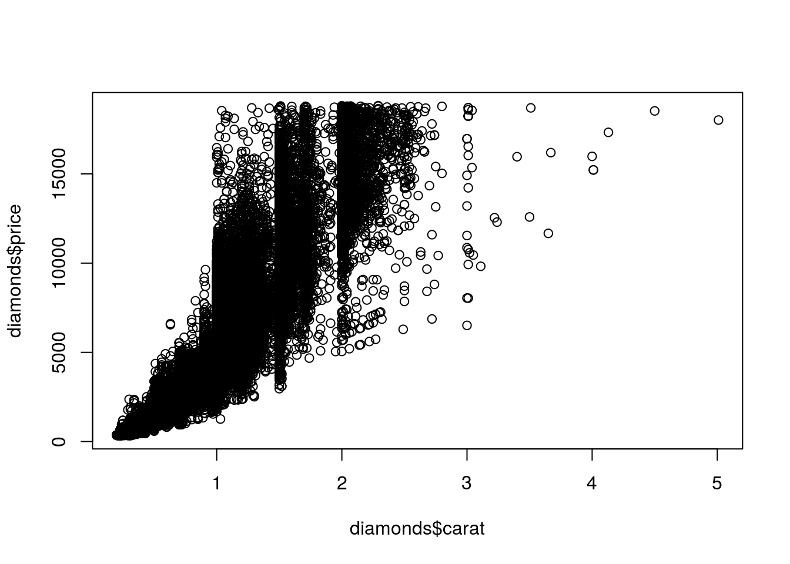
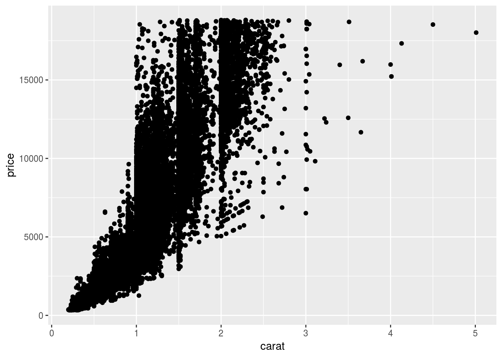
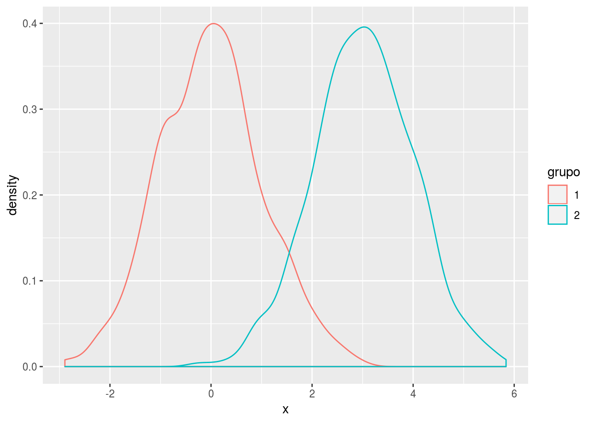
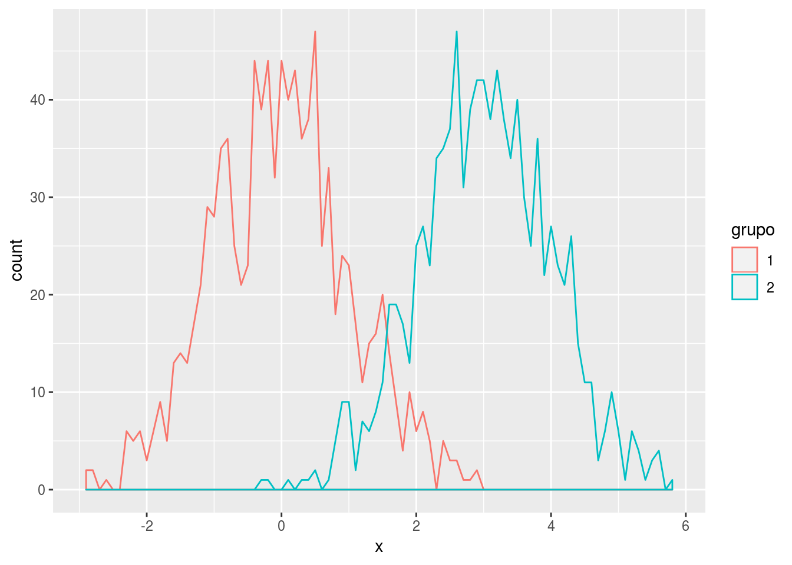
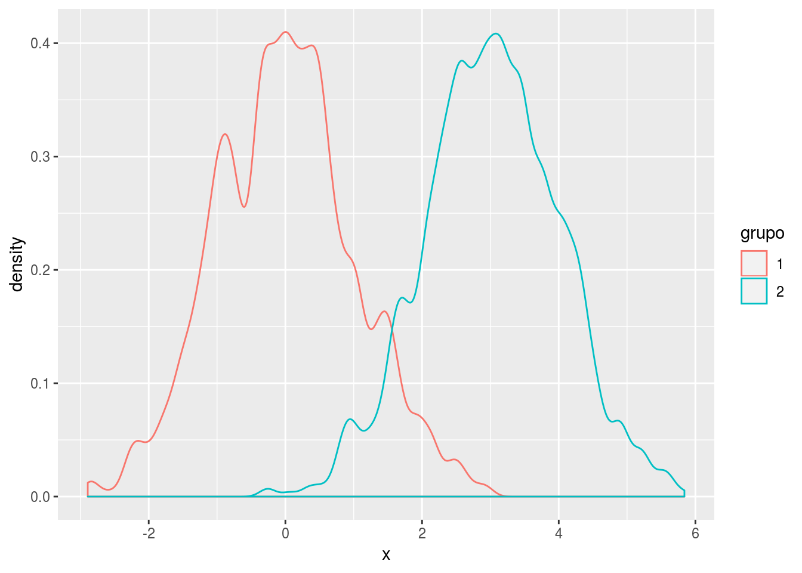
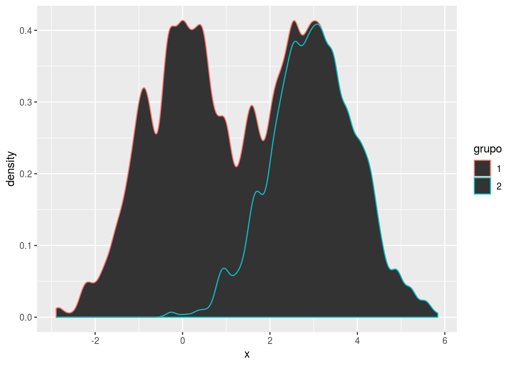
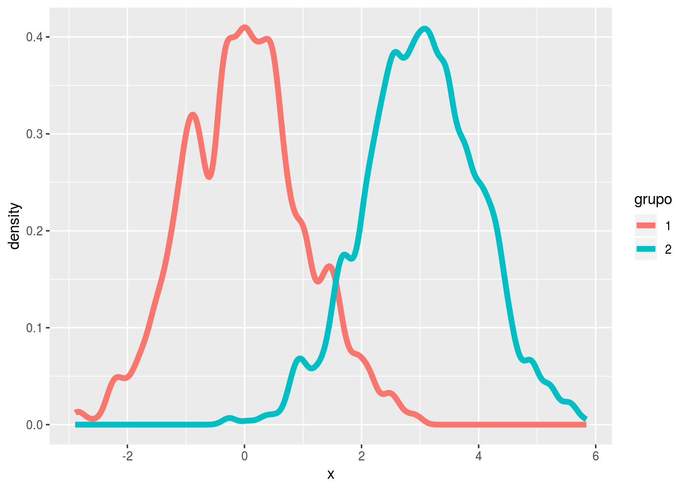
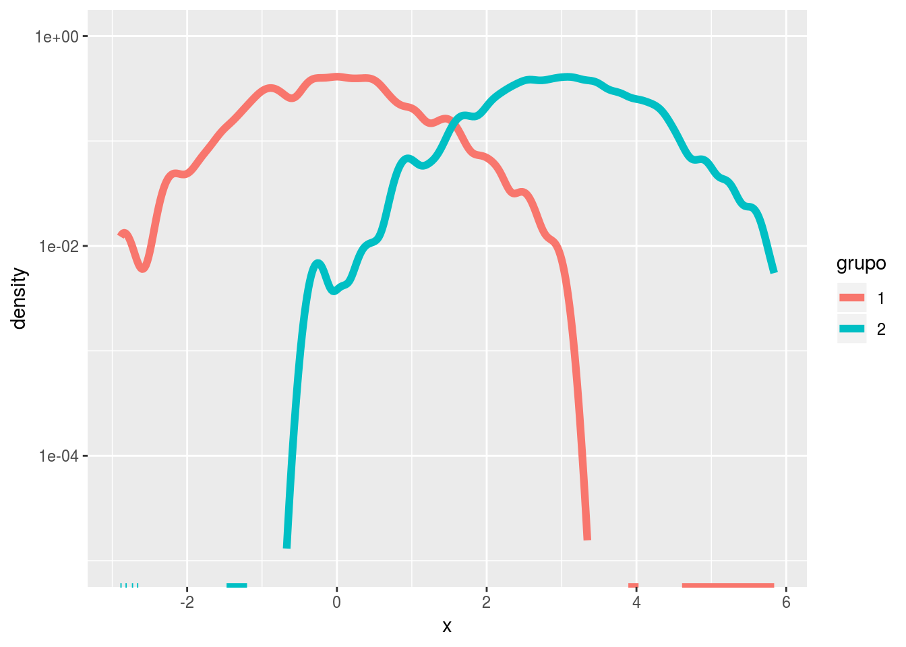
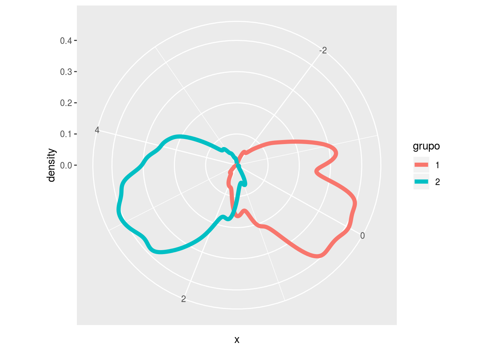
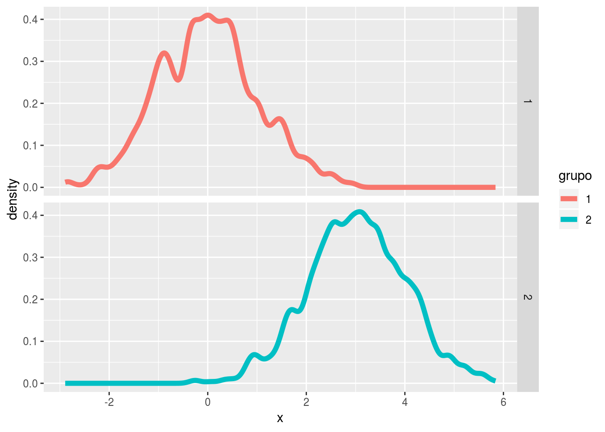

5.4 Visualización
La graficación es una manera eficiente de resumir, y mostrar información. Es fundamental entender el contexto de negocio y de la generación de los datos para tener más información con respecto a lo que se está graficando.
Aunque no hay mucha teoría alrededor de gráficos estadísticos, muchos se describen en distintos libros de texto de estadística (Unwin 2015, Introducción).
(Unwin 2015, citando a John Tukey) resume el propósito de la visualización de datos en cuatro frases:
- Las gráficas son para análsisis cualitativos o descriptivos y quizá semi cuantitativos, nunca para análisis profundo cuantitativo (las tablas son mejores para esta tarea).
- Las gráficas son para realizar comparaciones (en el tiempo, entre grupos), no para describir cantidades particulares.
- Las gráficas son para impactar (visualmente, para sorprender, para transmitir información), pero casi nunca sirven para reflejar patrones escondidos en los datos.
- Las gráficas deberían de reportar un análisis de datos trabajado, fino y cuidadoso. Jamás deben de reemplazar el análisis. Las gráficas están para fortalecer el análisis, no para fundamentarlo y los gráficos finales en un análisis deben reflejar el análisis realizado.
Esta sección resume algunas de las funciones implementadas para visualizar datos implementados en el paquete ggplot2 de R. Está fuera de la alcance de este apartado las consideraciones estadísticas que deben de realizarse en un análisis de datos pues el enfoque es mostrar cómo realizar esta tarea en R. En la figura podemos ver la etapa del análisis de datos correspondiente.
Figura 5.11: Visualización en el análisis de datos (Grolemund and Wickham 2016, Introducción).
En R hay muchas maneras de realizar una tarea, esto es particularmente cierto en lo que se refiere a visualización de datos (Yau 2016). A fin de cuentas, lo más importante de la visualización de datos es cuán útil es esta herramienta para el análisis de datos y la forma en la que se le indica a la máquina como realizar la tarea es un elemento importante solo en la medida en la que facilite el trabajo del estadístico.
Aunque posiblemente cualquiera de los gráficos que se pueden hacer con ggplot2 pueden hacerse también con los gráficos implementados en el base graphics de R (Yau 2016), aquí se cubre visualización en ggplot2 principalmente debido a que:
- El patrón de programación está definido formalmente mientras que en el
baseno lo está. Esto significa que cuando entiendes cómo hacer una gráfica enggplot2, puedes hacer una gran cantidad de gráficos (Yau 2016). ggplot2tiene una gran cantidad de defaults predefinidos que facilitan realizar gráficos ilustrativos y estéticos muy rápidamente (Mejia 2013).ggplot2es compatible con piping15 (Leek 2016).- Muchas veces, resulta necesario realizar un mismo gráfico para varios subconjuntos de datos. Esta tarea se puede hacer en forma directa en
ggplot2y no en elbasea través de facetas.
Primero, se cubrirá el concepto detrás de ggplot2, la gramática de las gráficas. Posteriormente, se describen los componentes de una gráfica en ggplot2, las capas y sus componentes proporcionando ejemplos en cada caso.
5.4.1 La gramática de las gráficas
Es una herramienta que nos permite (Wickham 2010):
- Describir los componentes de una gráfica en forma concisa
- Ir más allá de los nombres de la gráfica (e.g. scatterplot, boxplot, etc.)
- Entender la estructura detrás de los gráficos estadísticos
5.4.2 ¿Qué es?
La gramática le da reglas al lenguaje y es un sistema formal para generar enunciados (Wilkinson 2006). Wilkinson (2006) proporciona una gramática para gráficos que permite describir y construir una gran cantidad de gráficos estadísticos. (Wickham 2010) implementa esta gramática en el paquete ggplot2 de R (Wickham 2009).
La gramática define un gráfico estadístico como un mapeo de datos a atributos estéticos (un color, una forma) en objetos geométricos (barras, líneas, puntos). Además, una gráfica puede implicar transformaciones estadísticas de los datos y se dibuja sobre un sistema de coordenadas específico. Por último, es posible generar el mismo gráfico en diferentes subconjuntos de los datos (facetas). La combinación de estos factores independientes conforman un gráfico (Wickham 2009, pág. 5).
La implementación en capas, permite que los usuarios no se limiten únicamente a los gráficos específicos que se implementan paquete a paquete sino que puedan realizar tantos gráficos como este lenguaje de gráficos permita.
5.4.3 Base plotting vs. ggplot
Observemos una gráfica utilizando la base diamonds en donde graficamos en el eje \(x\) el carataje de diamantes y en el eje \(y\) su precio:
data(diamonds, package = "ggplot2")
str(diamonds)## Classes 'tbl_df', 'tbl' and 'data.frame': 53940 obs. of 10 variables:
## $ carat : num 0.23 0.21 0.23 0.29 0.31 0.24 0.24 0.26 0.22 0.23 ...
## $ cut : Ord.factor w/ 5 levels "Fair"<"Good"<..: 5 4 2 4 2 3 3 3 1 3 ...
## $ color : Ord.factor w/ 7 levels "D"<"E"<"F"<"G"<..: 2 2 2 6 7 7 6 5 2 5 ...
## $ clarity: Ord.factor w/ 8 levels "I1"<"SI2"<"SI1"<..: 2 3 5 4 2 6 7 3 4 5 ...
## $ depth : num 61.5 59.8 56.9 62.4 63.3 62.8 62.3 61.9 65.1 59.4 ...
## $ table : num 55 61 65 58 58 57 57 55 61 61 ...
## $ price : int 326 326 327 334 335 336 336 337 337 338 ...
## $ x : num 3.95 3.89 4.05 4.2 4.34 3.94 3.95 4.07 3.87 4 ...
## $ y : num 3.98 3.84 4.07 4.23 4.35 3.96 3.98 4.11 3.78 4.05 ...
## $ z : num 2.43 2.31 2.31 2.63 2.75 2.48 2.47 2.53 2.49 2.39 ...plot(diamonds$carat, diamonds$price)
Ese mismo gráfico, podemos realizarlo con la función qplot del paqueteggplot:
qplot(data = diamonds, x = carat, y = price, geom = "point")
En donde especificamos que la variable carat en la base diamonds mapea al eje \(x\), la variable price en la misma base al eje \(y\) y queremos que la geometría sea de puntos.
Observa que la estética de la gráfica generada con la función plot es un poco distinta a la generada con qplot (función que utiliza ggplot). Verifica la clase que tiene cada objeto, en el primer caso no tiene y en el segundo tenemos un objeto de clase ggplot que tiene atributos y que podemos guardar en un objeto.
5.4.4 ggplot
Los componentes de la gramática de gráficas específica para ggplot son:
- Una o más capas donde cada cuál tiene:
- Datos
- Mapeo estético de los datos (aesthetic mappings)
- Un objeto geométrico
- Una transformación estadística
- Ajustes en las posiciones de los objetos
- Una escala para cada estética
- Un sistema de coordenadas
- Una especificación de facetas
Al graficar en ggplot se tiene control sobre todos estos elementos:
ggplot() +
layer( # una capa
data = diamonds, # datos
mapping = aes(x = carat, y = price), # mapeo estético
geom = "point", # geometría
stat = "identity", # transformación estadística
position = "identity" # ajuste en posición de objetos
) +
scale_y_continuous() + # Escala para estética continua en y
scale_x_continuous() + # Escala para estética continua en x
coord_cartesian() # Sistema de coordenadas
ggplot implementa también una serie de defaults (Wickham 2009, pág. 3) que facilitan la escritura de nuevas gráficas pues no es necesario especificar cada uno de los detalles al agregar una capa. Por tanto, es posible escribir el mismo gráfico haciendo uso de esos defaults:
ggplot(diamonds, aes(carat, price)) + geom_point()
5.4.5 Características importantes
Los componentes de una gráfica son ortogonales:
- Cambiar uno no debe romper los otros
- Una configuración distinta de componentes es válida
- Puedes construir mayor complejidad agregando capas5.4.6 Las capas
ggplot produce un objeto que se puede convertir en una gráfica. Es decir, R sabe cómo convertirlo en una gráfica.
Este objeto está formado por capas, mismas que tienen sus entradas (inputs) particulares y que comparten argumentos del gráfico base generado por la función ggplot(). Con el operador + se van agregando las distintas capas al mismo objeto.
Así como en otros casos, el objeto en R puede ser guardado en una variable, se le puede imprimir, se le puede guardar como imagen de diferentes formatos, o se puede guardar en una lista o en un Rdata.
5.4.7 Componentes de una capa
5.4.7.1 Datos y mapa estético
Permite mapear las columnas del data.frame de entrada a los aspectos de la gráfica.
Es decir,
- las coordenadas \(x\), \(y\)
- los grupos (definidos por otra variable)
- el tamaño
- el color
- el relleno
Para ejemplificar, generamos una variable \(x\) que proviene de dos distribuciones normales: mil realizaciones \(N(0, 1)\) y mil \(N(3, 1)\). Asignamos un grupo a las primeras mil y otro a la segunda.
mix2norm <- data.frame(x = c(rnorm(1000), rnorm(1000, 3)),
grupo = as.factor(rep(c(1,2),each=1000)))
ggplot(mix2norm, aes(x=x, color = grupo)) + geom_density()
5.4.7.2 Transformaciones estadísticas
Ésta puede ser, por ejemplo, un resumen de la entrada (input) recibido; se especifica vía el comando stat. Ejemplos:
- binning
- smoothing
- boxplot
- identity
Utilizamos, por ejemplo, la transformación bin, misma que se especifica en el objeto geométrico:
ggplot(mix2norm, aes(x=x, color = grupo)) +
geom_density(stat = "bin", binwidth = 0.1)
La transformación utilizada tiene asociada parámetros como lo es el tamaño en el que deben realizarse los colapsos de la variable categórica (binwidth).
5.4.7.3 El objeto geométrico
Esto permite especificar el tipo de gráfico a crear. Se especifica con la geom. Se define de acuerdo a su dimensión, es decir,
0-dim: puntos, texto1-dim: líneas2-dim: polígonos, intervalos
Otras geometrías incluyen:
geom_histgeom_bargeom_contourgeom_linegeom_density
Además, se puede cambiar la transformación estadística manteniendo la geometría fijada. Al ejemplo anterior, le agregamos una transformación estadística dentro del objeto geométrico con el parámetro adjust.
ggplot(mix2norm, aes(x = x, color = grupo)) + geom_density(adjust = 1/2)
En este caso, estamos pidiendo la mitad del tamaño del bin que se calcula en forma algorítmica por el paquete.
Viceversa, puede cambiarse la geometría pero mantener la transformación estadística.
ggplot(mix2norm, aes(x = x, color = grupo)) + stat_density(adjust = 1/2)
Revisa el comando position y geometry. Revisa sus defaults y copia algunos de los ejemplos en la documentación.
geom_density por ejemplo utiliza ribbon o una cosa que a veces encontrarán en español como violín.
Ejercicios
-
Genera una gráfica con la función
ggploten donde los datos sea la basediamondsy la estética sea \(x = price\). Especifica como geometría una densidad. -
Cambia el color y el relleno de la geometría a gris (
grey50) -
Cambia la geometría a
ribbon, cambia los parámetros necesarios para que funcione. -
Agrega una faceta para que se haga un gráfico para cada uno de los subconjuntos definidos por la variable
cut. -
Agrega a la gráfica el comando
coord_flippara que el precio este en el eje \(y\).
# Respuestas
# 1
g <- ggplot(diamonds, aes(x = price)) + stat_density()
g
# 2
g +
stat_density(fill = "grey50", colour = "grey50")
# 3
g <- g +
stat_density(aes(ymax = ..density.., ymin = -..density..),
fill = "grey50", colour = "grey50",
geom = "ribbon", position = "identity")
g
# 4
g <- g +
facet_grid(. ~ cut)
g
# 5
g + coord_flip()5.4.7.4 Posición
Es posible especificar la posición de cada una de las capas en relación a otras. Ejemplos:
dodgeidentityjitter
ggplot(mix2norm, aes(x=x, color = grupo)) +
stat_density(adjust=1/2, size=2, position = "identity", geom = "line")
5.4.7.5 Escalas
Determina cuál valor de entrada mapea a qué estética específica. Se escribe usando scale. Hay de todo:
continouslogarithmicvalues to shapeswhat limitswhat labelswhat marks
ggplot(mix2norm, aes(x=x, color = grupo)) +
stat_density(adjust=1/2, size=2, position ="identity", geom ="line") +
scale_y_log10(limits = c(1e-5,1))
5.4.7.6 Coordenadas
Te permite especificar las posiciones de las cosas y cómo mapean a las posiciones en la pantalla. Antes todo era entorno a cómo le dices las cosas a R pero también importa cómo las ves. Coordenadas distintas pueden afectar a los objetos geométricos. Ejemplos:
cartesianpolarmap-projection
ggplot(mix2norm, aes(x = x, color = grupo)) +
stat_density(adjust = 1/2, size = 2, position = "identity", geom = "line") +
coord_polar()
5.4.7.7 Facetas
Permite arreglar diferentes gráficas en un grid o panel.
ggplot(mix2norm, aes(x = x, color = grupo)) +
stat_density(adjust = 1/2, size = 2, position = "identity", geom = "line") +
facet_grid(grupo ~ .)
Ve el help de facet_wrap
Bibliografía
Unwin, Antony. 2015. Graphical Data Analysis with R. Vol. 27. CRC Press.
Grolemund, G., and H. Wickham. 2016. R for Data Science. O’Reilly Media, Incorporated. http://r4ds.had.co.nz/.
Yau, Nathan. 2016. “Comparing Ggplot2 and R Base Graphics.” Blog. https://flowingdata.com/2016/03/22/comparing-ggplot2-and-r-base-graphics/; Flowingdata.
Mejia, Mandy. 2013. “10 Reasons to Switch to Ggplot.” Blog. https://mandymejia.wordpress.com/2013/11/13/10-reasons-to-switch-to-ggplot-7/.
Leek, Jeff. 2016. “Why I Don’t Use Ggplot2.” Blog. https://simplystatistics.org/2016/02/11/why-i-dont-use-ggplot2/.
Wickham, Hadley. 2010. “A Layered Grammar of Graphics.” Journal of Computational and Graphical Statistics 19 (1). Taylor & Francis: 3–28.
Wilkinson, Leland. 2006. The Grammar of Graphics. Springer Science & Business Media.
Wickham, Hadley. 2009. Ggplot2: Elegant Graphics for Data Analysis. Springer-Verlag New York. http://ggplot2.org.
Se introdujo el operador pipe de
Ren la sección de transformación en este capítulo y se mencionó como ayuda en la lectura y escritura de código. Un pipeline en programación consiste en un arreglo de elementos de procesamiento en donde la salida de cada elemento es la entrada del siguiente elemento. Este concepto fue concebido por Douglas Mcllroy (Mahoney, n.d.).↩